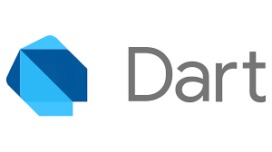

Apa itu Dart?

Pernahkah kalian mendengar atau bahkan mengembangkan aplikasi
Flutter? Jika iya, berarti kalian sudah tahu bahwa Flutter ditulis
menggunakan bahasa Dart. Jika belum, maka selamat berkenalan dengan
Dart.
Dart adalah bahasa
pemrograman yang open source dan general purpose. Dart dikembangkan
oleh Google dan ditujukan untuk membuat aplikasi multiplatform
seperti mobile, desktop, dan web.
Dart awalnya dikenalkan pada GOTO conference pada tahun 2011.
Project ini didirikan oleh Lars Bak dan Kasper Lund dari Google,
sampai akhirnya versi Dart 1.0 dirilis pada 14 November 2013. Bulan
Agustus 2018, Dart 2.0 dirilis dengan perubahan bahasa seperti
perubahan type system.
Jauh sebelum ada Flutter, Dart awalnya digunakan untuk membuat web
yang ada di Google. Tujuan awal pembuatan Dart adalah untuk
menggantikan JavaScript yang dinilai memiliki banyak kelemahan.
Sejak saat itu, rilisnya Flutter SDK untuk pengembangan iOS,
Android, dan web menjadi sorotan baru pada bahasa Dart.
Pelajari Dart lebih lanjut...
Apa itu Flutter?
Flutter adalah SDK (Software Development Kit) yang dikembangkan oleh
Google untuk membuat aplikasi yang bagus dan bisa berjalan pada
berbagai platform. Flutter 2 merupakan versi yang memberikan
dukungan pada Anda untuk membangun aplikasi pada sistem operasi
Android, iOS, Web, Windows, Linux, dan MacOS. Dengan ini, Anda cukup
sekali coding atau dikenal dengan single codebase. Flutter juga
sudah digunakan oleh banyak developer maupun organisasi di seluruh
dunia, selain itu Flutter bersifat open source.
 Pelajari Flutter lebih lanjut...
Pelajari Flutter lebih lanjut...
Apa itu Javascript?
JavaScript adalah bahasa pemrograman tingkat tinggi yang pada
awalnya dikembangkan untuk membuat website menjadi lebih “hidup”.
Bersama dengan HTML dan CSS, JavaScript menjadi bahasa pemrograman
paling populer untuk mengembangkan aplikasi berbasis web. Bahasa ini
mampu memberikan logic ke dalam website, sehingga website tersebut
memiliki fungsionalitas tambahan dan lebih interaktif.
Awalnya JavaScript dibuat supaya dapat berjalan di lingkungan
browser dan membuat website menjadi lebih interaktif. Namun, saat
ini Anda sebagai developer dapat menggunakan bahasa pemrograman
JavaScript di berbagai lingkungan pengembangan. Sehingga, tidak
hanya sebatas browser/client, namun JavaScript juga bisa berjalan di
server menggunakan Node.js.
JavaScript termasuk ke dalam kategori scripting language. Apa
maksudnya? Salah satu ciri-ciri utama dari bahasa scripting adalah
kode tidak perlu dikompilasi agar bisa dijalankan. Scripting
language menggunakan interpreter untuk menerjemahkan kode atau
perintah yang kita tulis supaya dimengerti oleh mesin.
Itulah kenapa bahasa scripting tidak membutuhkan banyak kode yang
perlu ditulis agar sebuah program bisa dijalankan. Hanya dengan satu
baris kode berikut Anda sudah bisa membuat program yang menampilkan
teks “Hello, World!” ke layar.
consoles.log("Hello World!");
Sederhana, bukan? Itulah salah satu ciri utama JavaScript sebagai
scripting language.
Pelajari Javascript lebih lanjut...